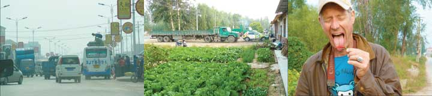
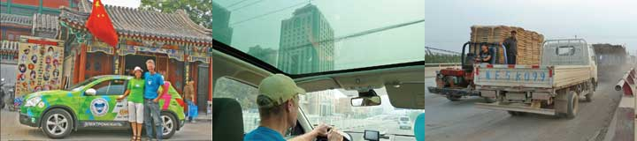
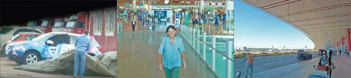

The famous philosopher lived here 2500 years ago. People came from afar to hear his words and down the times Chinese emperors have built a vast temple-complex to his honor. The houses and pavilions are all relatively low set in a park of thousand years-old cedar trees. Giant turtles carry his words of wisdom on their backs. The place is not shining newly painted as the famous temples in Beijing and we see not a single foreigner. It is all very low-key and honorable. I bought a small red-painted wooden plate and Serena wrote my wish on it in Chinese.
The famous philosopher lived here 2500 years ago. People came from afar to hear his words and down the times Chinese emperors have built a vast temple-complex to his honor. The houses and pavilions are all relatively low set in a park of thousand years-old cedar trees. Giant turtles carry his words of wisdom on their backs. The place is not shining newly painted as the famous temples in Beijing and we see not a single foreigner. It is all very low-key and honorable. I bought a small red-painted wooden plate and Serena wrote my wish on it in Chinese.
Nina

The lake in the middle of Jinan is the pride of the town and the park circling the lake is several hundred years old. Pensioners played traditional music and chanted, others performed tai chi. The park is pleasantly relaxed. A fast boat shaped as a tea-pavilion sailed us out to a tiny island with a temple and a pavilion where poets and sages long ago gathered and wrote poems. Green Car was fully charged and ready to take us to a holy mountain south of the city. We choose the smallest, steepest, narrowest

In the morning as we left Beizhou town we passed "China Solar Valley" with wind mills and solar panels on every street lamp. The land was totally flat. In the afternoon we crossed the Yellow River and entered Jinan the capital of Shandong - a small Chinese city we haven't heard of with six million inhabitants. At night we invented a string to guide the charging cable from the hotel room down to Green Car parked behind the hotel. It worked fine!
Nina

Today we went from national to provincial roads. Workshops and industry line the road as we drive south through Hebei province. Behind the first row of houses corn, cotton, vegetables and chili! are grown. The Chinese are impressively industrious and nothing is to small, to dirty or to boring to make up a living. Smells are extremely changing. One moment it is vinegar acid, shoe polish, paper or manure, the next moment it is burnt plastic, sulphur and almonds. For lunch we have the best shrimps ever - finely deep-fried and all eatable. As we arrive at our hotel in Shandong province it is evening. Now you no more see the soupy, dirty air. The Chinese go out eating, the streets are bustling with people having a good time and the houses are illuminated in all the strong colors you miss during day time.
Nina

We were taking pictures of Green Car as it suddenly couldn't brake. Perhaps a loose connection? After we had checked all fuses and knocked on the right connections the brake luckily worked perfectly again. On the national highway south of Beijing we came to an area where they grew sweet, giant grapes. We bought a kilo which we ate in no time. Next came villages where they produced cardboard and plywood. In Daicheng the local industry turned out thermos-flasks and the air is bad even by Chinese standards. We found a cheap hotel admitting foreign guests - not a given fact. We settled in, hooked up Green Car through our room window and went out to pin down a Chinese meal.
Nina

Blue Car could not get out of Russia without me. So I flew from Beijing to Blue Car which stood quite unhurt under a tarpaulin near the border to Finland. It only took me a few moments to follow Blue Car through customs. As Blue Car now had entered EU and was in safe hands I flew back to Beijing. Blue Car will be transported back to Sakskoebing, its place of birth, to have a full check-up. It will subsequently drive with us through USA, top-tuned.
Nina
22 - 9. THE ROUND HOUSE
The most famous house in Beijing is a 600 years old wooden house. The perfectly round Temple of Heaven lies almost hidden in a big park of low, old cedar-trees. Dark blue tiles, golden dragons and red-lacquered columns. Big but not vast; not a cathedral rising towards heaven, but the edifice the emperor himself needed when once a year carried out the rituals to secure a bountiful harvest. The Chinese appears to me to be utterly pragmatic and the Ming-emperor seems to have been likewise. Chinese tourists from the great country mill around snapping pictures of each other posing in front of the old temple.
Hjalte
 The train had to do switch-backs up through the wild and narrow valley to reach the Great Wall. Hjalte wanted to go up to the highest point, while Serena and I took the cable-car. As it was, Hjalte went to the left side while we glided up to the right side and we did not meet before leaving the wall. It was much better than any picture to see for real how the wall kept snaking up and down the incredible steep green mountains. The wall was heavily restored, and not a single stone appeared to be old. The overcrowded bus we took back to Beijing was flying down the mountain and then as expected caught in chaotic traffic jams. Millions of people and cars and street-stalls and flashing advertisements. The tickets-seller yelled, parents and children got tired and some jumped off the not-moving bus to catch the subway.
The train had to do switch-backs up through the wild and narrow valley to reach the Great Wall. Hjalte wanted to go up to the highest point, while Serena and I took the cable-car. As it was, Hjalte went to the left side while we glided up to the right side and we did not meet before leaving the wall. It was much better than any picture to see for real how the wall kept snaking up and down the incredible steep green mountains. The wall was heavily restored, and not a single stone appeared to be old. The overcrowded bus we took back to Beijing was flying down the mountain and then as expected caught in chaotic traffic jams. Millions of people and cars and street-stalls and flashing advertisements. The tickets-seller yelled, parents and children got tired and some jumped off the not-moving bus to catch the subway.
Nina
 Once Beijing was known for all the bicycles. It must be a very long time ago, says our guide, now almost none are left. The Chinese have got cars. Only a few Chinese use bicycles, and then preferable electric ones. As a result it takes very long time to get anywhere, especially during rush-hour when all traffic grinds to a halt. We also try the subway, but it is a long way to the station and when we get off our destination is still so far away we have to take a taxi. And immediately the taxi is locked into a new traffic-jam. A street of restaurants is decorated with red lanterns all advertising Yanjing Beer. Further down all shops sell incense-sticks to visitors to the Lama-Buddhist temple.
Once Beijing was known for all the bicycles. It must be a very long time ago, says our guide, now almost none are left. The Chinese have got cars. Only a few Chinese use bicycles, and then preferable electric ones. As a result it takes very long time to get anywhere, especially during rush-hour when all traffic grinds to a halt. We also try the subway, but it is a long way to the station and when we get off our destination is still so far away we have to take a taxi. And immediately the taxi is locked into a new traffic-jam. A street of restaurants is decorated with red lanterns all advertising Yanjing Beer. Further down all shops sell incense-sticks to visitors to the Lama-Buddhist temple.
Nina
After lunch we wandered on worn feet to the Tian'Anmen square. The square is vast but not much was going on except Chinese snapping pictures of themselves because they now stood on the historical centre of Beijing. Framing the square were historical buildings, the national museum, the parliament and a mausoleum containing the preserved body of Chairman Mao. His portrait still hangs over the gate to the Forbidden City. Elsewhere you do not meet him - only on the money. A short distance from the square we came to the most famous shopping street in Beijing full of western fashion clothes and watches. We found books in a mega bookstore. On the next street hundred food-stalls sold exotic fare such as grilled scorpion, roasted snakes, intestines, all kinds of weird sea-creatures and insects, but no dogs. The tourists do not like to see cooked pets.
Nina